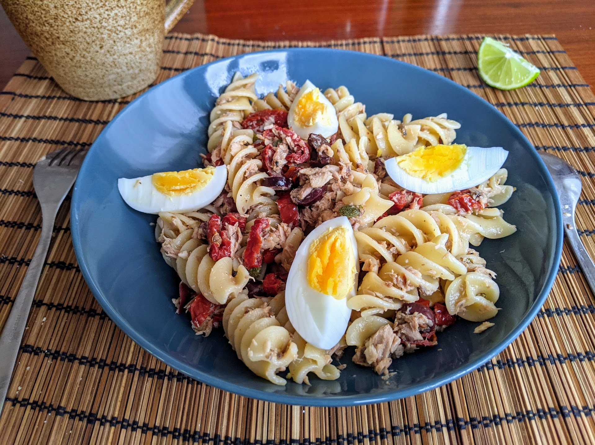

Pâtes à la niçoise

Pour 4 personnes :
- 500g de pâtes
- 4 œufs
- Une grosse boîte de thon au naturel
- Une boîte de sardines à l'huile
- Un demi-pot (environ 150g) de tomates séchées à l'huile
- 50g d'olives dénoyautées (préférablement noires)
- 3 cuillères à soupe de câpres
- Un peu de persil
- Un citron
- Huile d'olive, sel, poivre
- Faire cuire les œufs dans de l'eau bouillante dix minutes pour faire des œufs durs.
- Pendant ce temps, commencer à faire cuire les spaghettis dans de l'eau salée.
- Pendant ce temps, presser le citron, égoutter les tomates et les couper en morceaux, couper les olives noires en rondelles, émietter le thon et les sardines.
- Une fois que les œufs sont cuits, les mettre dans un peu d'eau froide pour les refroidir, puis les éplucher et les couper en quatre.
- Lorsque les spaghettis sont cuits, tout mélanger sauf les œufs (qui se servent à côté sur les assiettes), ajouter un petit filet d'huile d'olive, manger immédiatement.
Remarque : cette recette marche particulièrement bien avec des grosses pâtes, qui accrochent bien les morceaux assez gros de cette recette. Par exemple, des radiatori, lumaconi, fusilloni (comme sur la photo)…